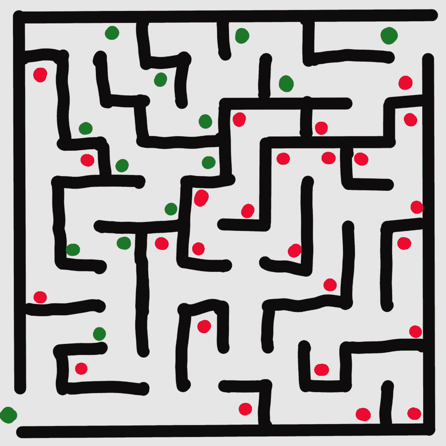

This game is played with a keyboard. Open this page on a laptop or desktop computer to play. Read about the project instead
The voice didn't load, so instructions will appear as text. The game sounds still work.
Sound Maze
The maze is hidden while you play. You'll see it when you get out.

Score
Out of 100. You lose 1 point for each step beyond the shortest route (40 at most), 4 for each listen and 2 for each route replay. Touching walls costs nothing.
That was the last level.